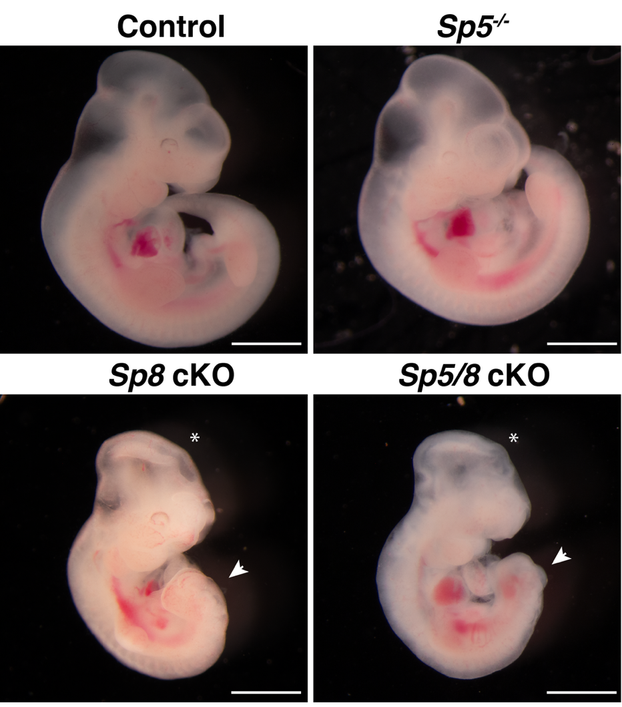
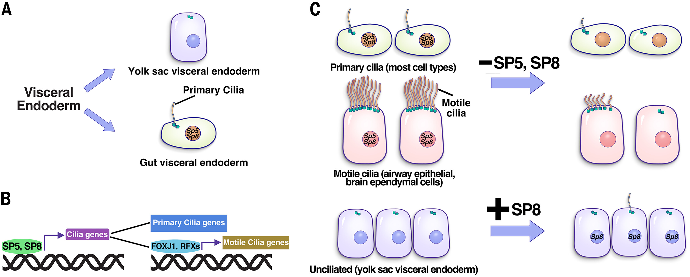
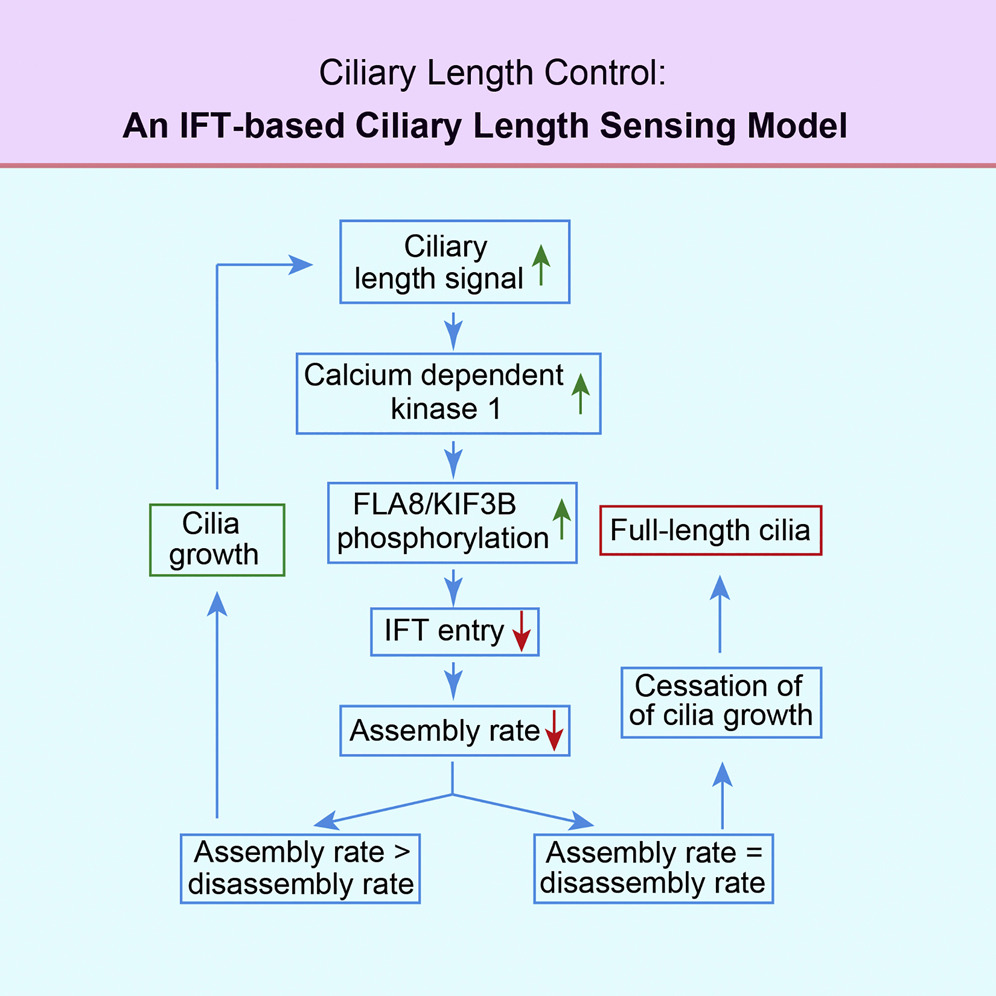
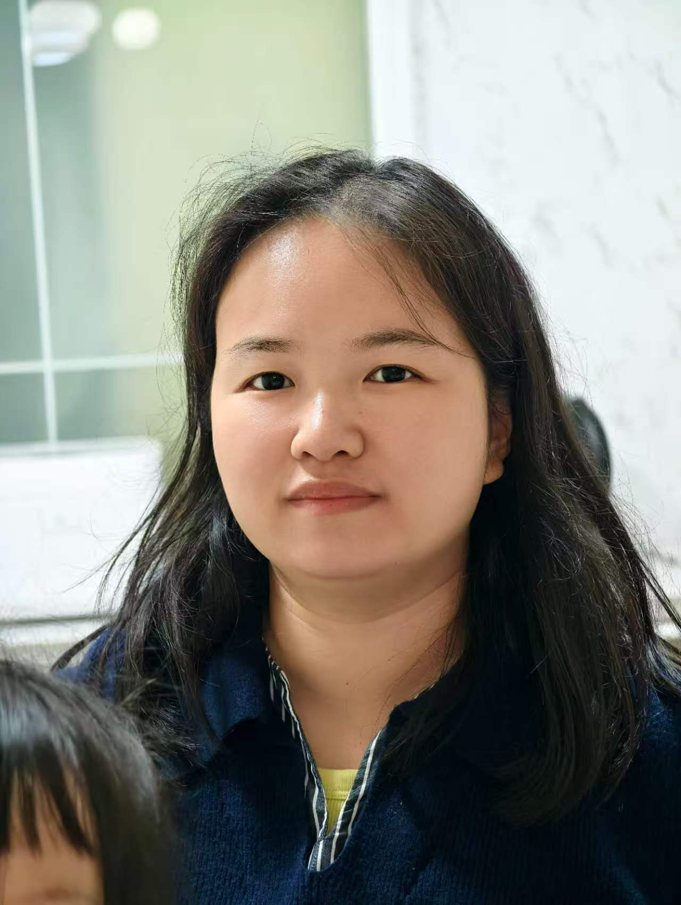
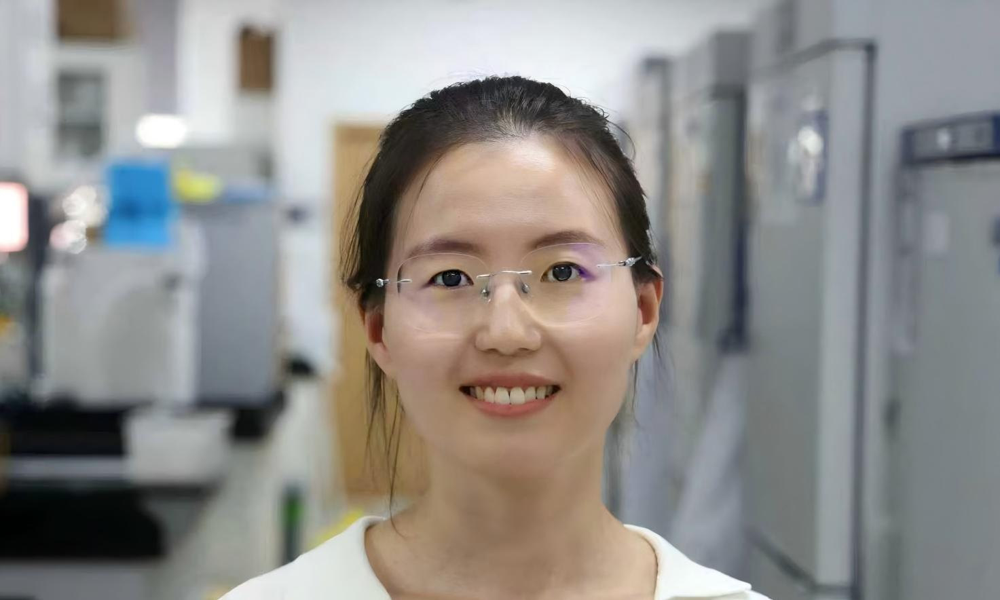
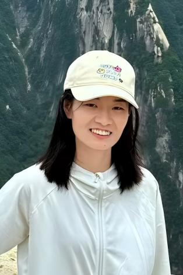
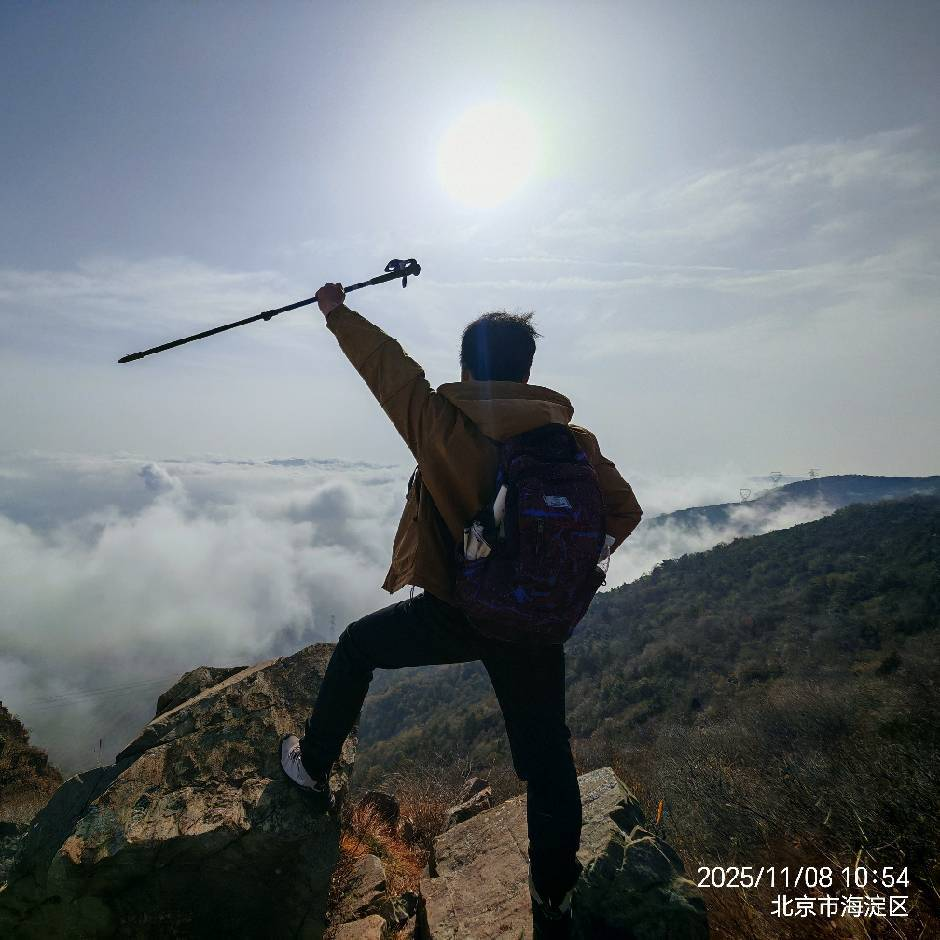

Yinwen Liang Laboratory
Cilia Master Switches & Disease
Decoding primary cilia gene regulatory networks, Hedgehog signaling, SHH medulloblastoma, and brain regeneration.
Research
Research Direction
The Liang laboratory at CIMR works on understanding mammalian development and tissues hemostasis, with a particular emphasis on the vital organelle, cilium. Cilia are present on the surface of most cells, play critical roles in motility, sensing, and signaling transduction, particularly Hedgehog (Hh) signaling pathway. Using genetic and multi-omics approaches, the Liang laboratory aims to uncover the molecular mechanism behind cilia formation and dysfunction, specifically in ciliopathies and Hedgehog signaling-related brain tumors (SHH-medulloblastoma). The laboratory is committed to advancing the understanding of these mechanisms to develop therapeutic strategies for treating related diseases.

Major Research Projects
- 1. Identifying novel regulators of the ciliary gene regulatory network
The lab has identified two key transcription factors SP5/8 of SP/KLF family binds to GC box of numerous ciliary genes, but how these TFs specially activating ciliary genes remains unclear. We hypothesize that cofactors, inductive signals and lineage-specific TFs play significant roles. Through forward genetic screens, the team have discovered novel regulators that mediate mRNA stability of cilia genes (publication in preparation). We are currently employing perturb-seq combined with high-throughput CRISPR screens to elucidate the detailed gene regulatory network involved in cilia formation. - 2. Dissecting cell-type-specific cilia formation and morphological diversity
The laboratory is exploring how different cell types regulate cilia formation and maintain the diversity of cilia morphology, which is essential for proper cellular function and tissue homeostasis. - 3. Understanding the molecular mechanisms of ciliopathies and SHH-medulloblastoma
Building on earlier discoveries, the lab is investigating the roles of SP/KLF family transcription factors and newly identified regulators in ciliopathies and SHH-medulloblastoma using induced pluripotent stem cell (iPSC)-derived airway organoids. The long-term goal is to harness the regulation of cilia formation as a therapeutic strategy to treat ciliopathies and Hedgehog-driven tumors. - 4. Exploring the roles of primary cilia in neuron maturation and differentiation
The Liang laboratory is studying the critical role of primary cilia in the maturation and differentiation of neurons and aiming to use insights from the gene regulatory network to rejuvenate the brain following injury or aging.
Major Contributions
-
1. Discovered transcription factors SP5 and SP8 as key transcriptional regulators in cilia formation (Science, 2025)
The laboratory discovered SP5 and SP8 as key transcriptional regulators of cilia formation, demonstrated that SP5 and SP8 directly bind to and activate numerous cilia gene expression, including Foxj1 and RFX family TFs genes. Ectopic expression of SP8 can induce cilia formation in naturally unciliated cells, these two TFs are both necessary and sufficient to drive cilia formation (Science, 2025).

-
2. Uncovered the mechanisms of intraflagellar transport machinery and cilia assembly (Current Biology, 2018; Developmental Cell, 2014a; Developmental Cell, 2014b)
The Liang lab uncovered the molecular mechanisms governing intraflagellar transport (IFT) and cilia assembly, including the regulation of motor protein KIF3B via phosphorylation at S663. We also discovered a cilia-length regulation model through the regulation of IFT loading rate. (Current Biology, 2018; Developmental Cell, 2014a; Developmental Cell, 2014b)
- 3. Revealed molecular insights into ciliopathies and SHH-medulloblastoma (Science, 2025; eLife, 2025; Journal of Cell Biology, 2018; American Journal of Human Genetics, 2018)
The lab has made significant contributions to understanding the molecular basis of ciliopathies and SHH-medulloblastoma, identifying key regulatory nodes that may serve as therapeutic targets.
Publications
Our Team




Lab News
Contact & Opportunities
Address
10 Xitoutiao, Youanmen Wai, Fengtai District
Beijing, China
liangyinwen@cimrbj.ac.cn
We are hiring! Postdoctoral Fellows
We seek highly motivated postdocs to join our team at CIMR. Research directions include: cilia gene regulation, Hedgehog signaling, brain tumor organoids (SHH medulloblastoma), in vivo CRISPR screens, and cilia-based neural regeneration.
Requirements: PhD in molecular biology, neuroscience, genetics, cell biology or a related field; strong publication record; enthusiasm for cilia and developmental biology.
To apply, please send your CV, a brief research interest statement, and contact information of two referees to liangyinwen@cimrbj.ac.cn with subject line "Postdoc application – Liang Lab".
Apply now